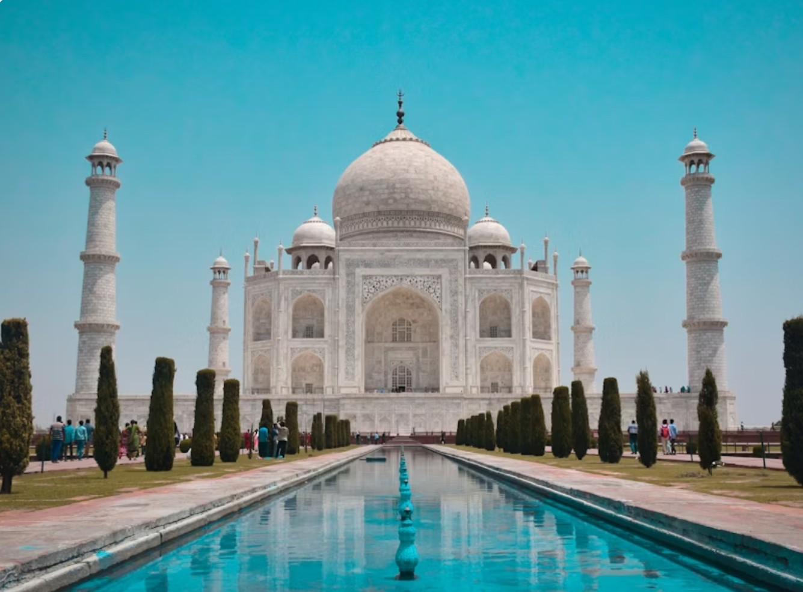

A timeless testament to love, crafted in white marble, where Mughal artistry meets eternal devotion.
The Taj Mahal, located in Agra, Uttar Pradesh, India,is an iconic masterpiece of Mughal architecture and a UNESCO World Heritage Site. Commissioned in 1632 by Emperor Shah Jahan in memory of his wife Mumtaz Mahal, this magnificent white marble mausoleum was completed in 1653, taking approximately 22 years and 20,000 workers to build. Renowned for its stunning symmetry, intricate pietra dura inlay work, and grand central dome, the Taj Mahal blends Persian, Islamic, and Indian architectural styles. The complex spans 17 hectares, including a mosque, guesthouse, and a Persian-style Charbagh garden with a reflecting pool.
A symbol of eternal love, the Taj Mahal attracts 7–8 million visitors annually, making it one of India’s most visited monuments. Its translucent marble changes hues with the time of day, appearing pinkish at dawn, white during the day, and golden under moonlight. The monument houses the cenotaphs of Mumtaz Mahal and Shah Jahan, with intricate Quranic calligraphy adorning its walls. Despite environmental challenges like pollution affecting the marble, the Archaeological Survey of India ensures its preservation through regular maintenance.
Open daily except Fridays from sunrise to sunset, the Taj Mahal also offers night viewing during full moon periods. Entry fees are ₹50 for Indian nationals and ₹1,100 ₹1,000 for foreigners (as of recent data). The best time to visit is October to March. The Taj Mahal remains a global cultural icon, celebrated for its architectural grandeur and historical significance.